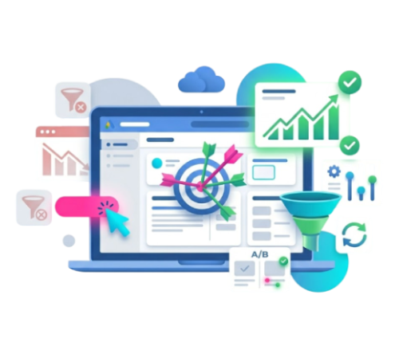
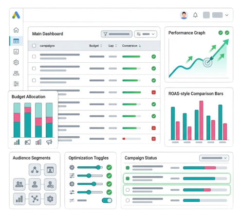

Happy Customers
We have clients from all over the world, including US, UK, Australia, Middle East, Canada and India
Most businesses don’t lose money on Google Ads because of the budget. They lose it because the setup is off. Targeting is loose, tracking isn’t clear, and campaigns are left running without real optimization. We help to fix that. We focus on people who are ready to act, set up tracking that shows what’s actually working, and keep improving campaigns based on real data.
You get better leads, more control over spend, and results that actually make sense.
Schedule a CallIf you’re trying to grow, then waiting for months isn’t an option. Google ads can help you put yourself in front of people who are already searching, comparing options, and are just one step away from taking an action. Rather than chasing after attention, you show up when it exactly matters.
Targeting has moved way past basic filters like age or location. It looks at what people are actually doing, like what they search for, what they click, and what they come back to. So your ads don’t land in front of just anyone. They show up for people already leaning toward a decision. That means less guesswork and less wasted spend.
SEO takes time. You don’t see results right away, and that’s normal. But Google Ads? That can bring people in almost immediately. So instead of waiting and hoping, you run both. Ads give you quick traffic, while SEO slowly builds your presence. One handles now; the other handles what’s next.
You can actually see what’s working and what’s not. Every click, every penny spent, every result, it’s all there. No guessing. You quickly spot which campaigns are doing their job and which ones are just eating your budget. Makes decisions a lot easier.
Your brand appears across the entire Google ecosystem:
This is why businesses continue to rely on a Google Ads Agency to manage campaigns that require both speed and precision.

Running ads is easy. But getting consistent returns from them isn’t that easy. That’s usually where things fall apart. Loose targeting, unclear data, and decisions based on guesswork. We don’t approach campaigns that way. Everything is built around what actually drives revenue. CloudConverge focuses on what actually drives growth.
Our specialists are certified, but more importantly, experienced in managing campaigns, working inside accounts daily, adjusting, testing, and refining based on what the data is actually showing, not just on the spend budget.
Clicks don’t mean much if the page doesn’t carry the intent forward. That gap is where most conversions are lost. We make sure the message, offer, and user flow all connect, so when someone lands, they know exactly what to do next. No confusion, no drop-off.
Automation works, but only when it’s fed the right signals. If the setup is messy, it burns through the budget. If the structure is clean, it starts finding the right opportunities on its own. We focus on getting those inputs right, so bidding decisions actually support performance instead of working against it.
You won’t get buried in dashboards or vague metrics. We keep it focused: what’s driving leads, what’s costing money, and what’s being improved next. Clear numbers, clear direction, and no need to second-guess what’s happening inside your account.
Our services are built for businesses looking for structured Google Ads Management Services, from setup to scaling, across different campaign types and goals.
Search ads are simple, but they are also easy to get wrong. Someone searches; you show up. That’s it. But the difference is in what you target. We skip the flashy keywords and go after the ones that actually bring business. Then we clean up everything around it so you’re not paying for useless clicks.
For e-commerce, visibility isn’t enough. Feed quality, product segmentation, and bid control matter more than most realize. We optimize your product listings so they show up competitively and convert consistently. This approach is critical for improving Google Ads for e-commerce performance, where competition and margins vary.
Performance Max management works well when it’s guided properly. We structure asset groups, audience signals, and data inputs so automation has direction. Without that, it wastes budget. With it, it scales fast.
Most people don’t buy the first time. They browse, leave, forget. We bring them back. Not with the same generic ad, but based on what they actually browsed on your site.
YouTube isn’t just awareness anymore. With proper targeting and creatives, it drives real action. We focus on hooking attention early and aligning messaging with intent.
Getting leads isn’t the problem. Getting the right ones is. We cut out junk traffic, tighten who sees your ads, and fix the gaps between the ad and the page. That’s where most of the damage usually is.
Scaling e-commerce isn’t just about increasing budget. If you’re not careful, ROAS drops fast. We keep adjusting what’s getting spent and what’s not, so growth doesn’t eat into profitability.
Local campaigns are about visibility when it matters most. We optimize for location-based searches, call actions, and quick conversions that drive real business.
After managing campaigns across industries for years, one thing is clear: strategy only works when it adapts to the business model. Here’s how that plays out in real scenarios.
Most Google Ads accounts don’t need more budget. They just need structure. After working on campaigns across different industries, one thing is clear: performance improves when there’s a clear system behind every decision. This framework is built from years of managing campaigns as a performance-driven Google Ads Agency, where consistency matters more than short-term spikes.
We start by breaking the account down completely: campaign structure, conversion tracking, wasted spend, and audience signals. Not just what’s running, but what’s quietly draining the budget. Most issues sit there unnoticed.
Instead of dumping keywords into broad groups, we cluster them based on how users actually search. This helps control relevance, improves Quality Score, and gives us cleaner data to optimize against.
This is where budgets quietly leak. You won’t notice it at first, but it adds up. We go through search terms, cut the junk, and block anything that doesn’t lead to action. It’s not a one-time cleanup. We keep coming back to it because new waste shows up all the time.
We test angles, not just headlines. Different user intents respond to different messaging. Over time, we identify what actually drives clicks and conversions, not just impressions.
Keywords are just the starting point. We narrow it down using behavior, demographics, and past interactions. Less noise, better clicks.
If the page doesn’t convert, the campaign won’t either. We align messaging, simplify user flow, and remove friction points so traffic turns into actual leads or sales.
We don’t lock into one bidding approach. Manual, automated, or hybrid; everything is adjusted based on performance signals, conversion data, and scaling goals.
AI helps identify trends, predict outcomes, and adjust faster. But it still needs direction. We use it as a tool, not a shortcut.
No bloated reports. You see what matters, like cost, conversions, ROAS, and trends. Clear data that helps you understand performance and make decisions.
When all of this works together, campaigns stop feeling unpredictable. They start behaving like a system you can scale with confidence.
Not every business needs the same setup. Some need clarity. Some need efficiency. Others need scale. We structure our engagement based on what actually moves your performance forward.
For businesses starting fresh or fixing underperforming campaigns.
Best for:
What’s included:

For accounts already running but not delivering a strong ROI.
Best for:
What’s included:

For businesses ready to push aggressive growth while maintaining profitability.
Best for:
What’s included:
No fixed number. It depends on your budget, your industry, and how complex things get. You pay Google for the ads and a fee to whoever manages them. What matters more is what you’re getting back: leads or sales.
You can start getting traffic and leads within days. But consistent, optimized results typically take 3–6 weeks as data builds and campaigns are refined based on real performance.
A “good” ROAS depends on your margins. For e-commerce, many aim for 3x–5x. For lead generation, the focus shifts to cost per acquisition and lifetime value. The key is profitability, not just high numbers.
Dropping bids won’t fix CPC. If the setup is weak, you just get fewer clicks. Fix the basics instead: tight keywords, ads that actually match the search, and clean structure. Also, block junk searches with negatives. That’s where most waste sits.
Not really a fair comparison. SEO takes time, but keep working. Google Ads is instant but paid. One builds; the other pushes. Most businesses use both, one for now and one for later.
Performance Max is Google’s AI-driven campaign type that runs across all channels. It works well when structured properly with strong inputs, but without guidance, it can waste budget. Strategy still matters.
This usually comes down to mismatched intent, weak landing pages, or poor targeting. Getting traffic is easy. Converting that traffic requires alignment between ads, keywords, and user experience.
Look at who you’re attracting. If it’s the wrong crowd, fix the keywords first. Then adjust your ads and landing page so they speak to the right people. Relevance fixes most lead quality issues.
It does, especially for local businesses. Keep targeting specifics and budgets controlled. You don’t need big spending; you need the right clicks.
ROI is tracked through conversion tracking, cost per acquisition, and return on ad spend. A clear tracking setup is critical. Without it, you’re making decisions blindly.
We have clients from all over the world, including US, UK, Australia, Middle East, Canada and India
We have developed numerous complete web & mobile app for our clients across the globe.
We as an organization believe that client satisfaction begins from requirements definition phase to design, feedback cycle and golive.
We operate on all the top technology stacks such as .NET Core, MERN, MEAN, React Native, Swift, Java and many more.


"Good experience overall. My 3rd project with them overall. Will highly recommend using them."

Tom WymanWeb Designer
"Its been a pleasure to work with CloudConverge.io team. They have a great team, including their Customer Success Manager who was great help to us. We have been doing great during our peak sale season, without any hickup. Great job guys."

Richard HellerCEO
"We are really happy with how quickly we were able to launch the project, they had a really seamless process of getting our existing database and agents onboard, manage their leads & properties. We will definitely recommend using them for any web solution project. They have a great team in place with a talent to understand business intricacies."

Samuel CorrensLong Island RE
"We were looking to modern a lot of aspects within our organization including migration to Business Central as ERP, implementing Microsoft 365, Cloud Services and Web Development. We at Kabu Projects and Atmos are happy to refer Cloud Converge team and all IT services. They are well-versed with the best practices, have a good project management and software team."
Kabu Projects
"We are a non-profit were organizing a large event which includes delegates and attendees from all over the globe. The way Cloud Converge team handled our web presence, online payment system was truly exceptional. The entire process including site design, implementation of CRM, integration with partners, live dashboards were all delivered in record time. Most of all, because of the high footfall on the event, we had thousands of registration on launch itself, the way the entire system worked effortlessly was a great experience for all stakeholders. We have done similar launches in the past with varied experiences, no doubt, what Cloud Converge delivered is something we will continue to use for years to come."

Entrepreneur's Organization Gurgaon
"We are very happy with the project delivered by the CC team. The entire development process has worked seamlessly for us, with regular updates, thorough testing of deliverables, great ideas throughout the development process."

Barry SarnoffCEO